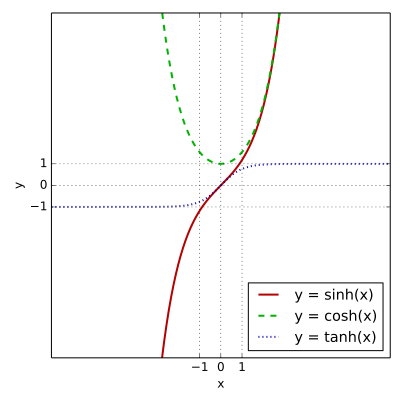

圆锥曲线 椭圆 第一定义 到两个定点 F 1 F_1 F 1 F 2 F_2 F 2 ∣ F 1 F 2 ∣ |F_1F_2| ∣ F 1 F 2 ∣
我们不妨设 F 1 = ( − c , 0 ) , F 2 = ( c , 0 ) F_1=(-c,0),F_2=(c,0) F 1 = ( − c , 0 ) , F 2 = ( c , 0 ) M M M M M M F 1 , F 2 F_1,F_2 F 1 , F 2 2 a 2a 2 a a > c a>c a > c
( x − c ) 2 + y 2 + ( x + c ) 2 + y 2 = 2 a \sqrt{(x-c)^2+y^2}+\sqrt{(x+c)^2+y^2}=2a ( x − c ) 2 + y 2 + ( x + c ) 2 + y 2 = 2 a 我们把一个根号移到另一侧，然后两边平方，整理后再平方，可以得到：
x 2 a 2 + y 2 a 2 − c 2 = 1 \dfrac{x^2}{a^2}+\dfrac{y^2}{a^2-c^2}=1 a 2 x 2 + a 2 − c 2 y 2 = 1 不妨令 b = a 2 − c 2 b=\sqrt{a^2-c^2} b = a 2 − c 2 椭圆的标准方程 ：
x 2 a 2 + y 2 b 2 = 1 ( a > b > 0 ) \dfrac{x^2}{a^2}+\dfrac{y^2}{b^2}=1(a>b>0) a 2 x 2 + b 2 y 2 = 1 ( a > b > 0 ) 这个椭圆的焦点在 x x x y y y
x 2 b 2 + y 2 a 2 = 1 ( a > b > 0 ) \dfrac{x^2}{b^2}+\dfrac{y^2}{a^2}=1(a>b>0) b 2 x 2 + a 2 y 2 = 1 ( a > b > 0 ) 注意 c 2 = a 2 − b 2 c^2=a^2-b^2 c 2 = a 2 − b 2
第二定义 到一定点 F 1 F_1 F 1 1 1 1
我们不妨设 F 1 = ( c , 0 ) , F 2 = ( − c , 0 ) F_1=(c,0),F_2=(-c,0) F 1 = ( c , 0 ) , F 2 = ( − c , 0 ) a a a
( x − c ) 2 + y 2 + ( x + c ) 2 + y 2 = 2 a \sqrt{(x-c)^2+y^2}+\sqrt{(x+c)^2+y^2}=2a ( x − c ) 2 + y 2 + ( x + c ) 2 + y 2 = 2 a 不妨写出这个式子的共轭根式，
( x − c ) 2 + y 2 − ( x + c ) 2 + y 2 = 2 c x a \sqrt{(x-c)^2+y^2}-\sqrt{(x+c)^2+y^2}=\dfrac{2cx}{a} ( x − c ) 2 + y 2 − ( x + c ) 2 + y 2 = a 2 c x 容易知道他们的乘积就是 4 c x 4cx 4 c x
( x − c ) 2 + y 2 = c a ∣ x − a 2 c ∣ \sqrt{(x-c)^2+y^2}=\dfrac{c}{a}\vert{x-\dfrac{a^2}{c}} ( x − c ) 2 + y 2 = a c x − c a 2 容易知道准线方程为
x = a 2 c x=\dfrac{a^2}{c} x = c a 2 因为我们是取的右焦点，因此这个准线也称为右准线；同理取左焦点
x = − a 2 c x=-\dfrac{a^2}{c} x = − c a 2 称为左准线，而比值就是 c a \dfrac{c}{a} a c
e = c a = 1 − b 2 a 2 ∈ ( 0 , 1 ) e=\dfrac{c}{a}=\sqrt{1-\dfrac{b^2}{a^2}}\in(0,1) e = a c = 1 − a 2 b 2 ∈ ( 0 , 1 ) 特别的，圆的离心率为零；离心率越大，椭圆越扁平。
第三定义 第三定义是关于斜率的一种定义，其由两种形式，因为常见做法通常是点差法，因此有的时候也直接称为点差法。设椭圆
C : x 2 a 2 + y 2 b 2 = 1 C:\dfrac{x^2}{a^2}+\dfrac{y^2}{b^2}=1 C : a 2 x 2 + b 2 y 2 = 1 在 C C C P P P A , B A,B A , B
k P A ⋅ k P B = − b 2 a 2 = e 2 − 1 k_{PA}\cdot k_{PB}=-\dfrac{b^2}{a^2}=e^2-1 k P A ⋅ k PB = − a 2 b 2 = e 2 − 1 在 C C C P , Q P,Q P , Q M M M P Q PQ PQ
k O M ⋅ k P Q = − b 2 a 2 = e 2 − 1 k_{OM}\cdot k_{PQ}=-\dfrac{b^2}{a^2}=e^2-1 k OM ⋅ k PQ = − a 2 b 2 = e 2 − 1 证明可以用点差法，即设处两点坐标，做差得到直线斜率。这类关于中点、斜率的问题通常可以用点差法，同时因为是椭圆的一条弦与它的中点，我们也称其为中点弦问题。
点差法 不妨设
P ( x 1 , y 1 ) , Q ( x 2 , y 2 ) P(x_1,y_1),Q(x_2,y_2) P ( x 1 , y 1 ) , Q ( x 2 , y 2 ) 因此
{ x 1 2 a 2 + y 1 2 b 2 = 1 x 2 2 a 2 + y 2 2 b 2 = 1 \begin{cases} \dfrac{x_1^2}{a^2}+\dfrac{y_1^2}{b^2}&=1\\ \dfrac{x_2^2}{a^2}+\dfrac{y_2^2}{b^2}&=1 \end{cases} ⎩ ⎨ ⎧ a 2 x 1 2 + b 2 y 1 2 a 2 x 2 2 + b 2 y 2 2 = 1 = 1 做差，得到
( x 1 − x 2 ) ⋅ x 1 + x 2 a 2 + ( y 1 − y 2 ) ⋅ y 1 + y 2 b 2 = 0 (x_1-x_2)\cdot\dfrac{x_1+x_2}{a^2}+(y_1-y_2)\cdot\dfrac{y_1+y_2}{b^2}=0 ( x 1 − x 2 ) ⋅ a 2 x 1 + x 2 + ( y 1 − y 2 ) ⋅ b 2 y 1 + y 2 = 0 根据中点
{ x 1 + x 2 = 2 x M y 1 + y 2 = 2 y M \begin{cases} x_1+x_2&=2x_M\\ y_1+y_2&=2y_M \end{cases} { x 1 + x 2 y 1 + y 2 = 2 x M = 2 y M 因此
( x 1 − x 2 ) ⋅ x M a 2 + ( y 1 − y 2 ) ⋅ y M b 2 (x_1-x_2)\cdot\dfrac{x_M}{a^2}+(y_1-y_2)\cdot\dfrac{y_M}{b^2} ( x 1 − x 2 ) ⋅ a 2 x M + ( y 1 − y 2 ) ⋅ b 2 y M 又因为斜率
k = y 1 − y 2 x 1 − x 2 k=\dfrac{y_1-y_2}{x_1-x_2} k = x 1 − x 2 y 1 − y 2 因此就有
x M a 2 + k ⋅ y M b 2 = 0 \dfrac{x_M}{a^2}+k\cdot\dfrac{y_M}{b^2}=0 a 2 x M + k ⋅ b 2 y M = 0 整理可得出两个结论。
在点差法的使用过程中一定要注意检验，首先是涉及到斜率不存在的问题，其次是我们设出直线与圆锥曲线交于两点，前提是要有两个焦点，即要验证求出来的斜率能否使得 Δ > 0 \Delta>0 Δ > 0
同时，我们也可以根据仿射变换轻松得到，这将其视为一种变换。
几何性质 椭圆有两条对称轴（两个坐标轴）和一个对称中心（原点）。
x 2 a 2 + y 2 b 2 = 1 ( a > b > 0 ) \dfrac{x^2}{a^2}+\dfrac{y^2}{b^2}=1(a>b>0) a 2 x 2 + b 2 y 2 = 1 ( a > b > 0 ) 我们注意到，
x 2 = a 2 ( 1 − y 2 b 2 ) x^2=a^2\paren{1-\dfrac{y^2}{b^2}} x 2 = a 2 ( 1 − b 2 y 2 ) 因此
同理
也就是说，椭圆整个图形都在一个中心在原点、长为 b b b a a a
椭圆的面积：S = π a b S=\pi ab S = πab a , b a,b a , b
证明：根据仿射变换显然。或利用微积分，此处略。
椭圆的周长是一个没有答案的问题，历史上许多伟大的数学家，如拉马努金，都提出了非常精确的近似公式来估算椭圆周长，但它们都只是近似，无法得到精确的有理数结果。现代我们知道可以用第二类完全椭圆积分来表示，但这对高中数学便没有任何意义了。
椭圆的特征三角形：左右焦点、原点、上下顶点，所构成的三角形称为特征三角形，因为其在一个三角形内完美的展现了 a , b , c a,b,c a , b , c
我们发现椭圆的离心率即为椭圆的特征三角形的短边顶点的角的正弦值，这常常用来计算离心率。因为特征三角形某种意义上也是一个焦点三角形（把另一半补上），因此一些用途我们在焦点三角形部分再说。
此外，我们知道椭圆的焦点三角形是及其重要的一个模型，因为其过于复杂，我们后面会开一个单独的模块讲解。
正切半角 我们直到椭圆的偏心角参数形式可以写作：
( a cos θ , b sin θ ) , θ ∈ R (a\cos\theta,b\sin\theta),\theta\in\R ( a cos θ , b sin θ ) , θ ∈ R 我们在三角函数部分提到过一个很万能 的公式，正切半角公式（也叫做万能公式），不妨记 φ \varphi φ θ \theta θ
sin θ = sin ( 2 × θ 2 ) = 2 sin φ cos φ sin 2 φ + cos 2 φ \sin\theta=\sin\paren{2\times\dfrac{\theta}{2}}=\dfrac{2\sin\varphi\cos\varphi}{\sin^2\varphi+\cos^2\varphi} sin θ = sin ( 2 × 2 θ ) = sin 2 φ + cos 2 φ 2 sin φ cos φ cos θ = cos ( 2 × θ 2 ) = cos 2 φ − sin 2 φ sin 2 φ + cos 2 φ \cos\theta=\cos\paren{2\times\dfrac{\theta}{2}}=\dfrac{\cos^2\varphi-\sin^2\varphi}{\sin^2\varphi+\cos^2\varphi} cos θ = cos ( 2 × 2 θ ) = sin 2 φ + cos 2 φ cos 2 φ − sin 2 φ 根据正切函数的定义，那么就有正切半角公式系列：
sin θ = 2 tan φ 1 + tan 2 φ cos θ = 1 − tan 2 φ 1 + tan 2 φ \sin\theta=\dfrac{2\tan\varphi}{1+\tan^2\varphi}\quad\cos\theta=\dfrac{1-\tan^2\varphi}{1+\tan^2\varphi} sin θ = 1 + tan 2 φ 2 tan φ cos θ = 1 + tan 2 φ 1 − tan 2 φ 那么，将其带入椭圆的偏心交参数，便可以得出椭圆的一个经典的有理参数方程：
x ( t ) = a 1 − t 2 1 + t 2 x(t)=a\dfrac{1-t^2}{1+t^2} x ( t ) = a 1 + t 2 1 − t 2 y ( t ) = b 2 t 1 + t 2 y(t)=b\dfrac{2t}{1+t^2} y ( t ) = b 1 + t 2 2 t 此时，坐标就变成了关于 t t t
我们观察这个方程的形式，也可以通过计算机作图来辅助，我们发现：
当 t ∈ R t\in\R t ∈ R ( x ( t ) , y ( t ) ) (x(t),y(t)) ( x ( t ) , y ( t ))
当 t → ± ∞ t\to\pm\infty t → ± ∞
因此，可以把 R ∪ { ∞ } \mathbb R\cup\{\infty\} R ∪ { ∞ }
t = tan θ 2 = sin θ 1 + cos θ t=\tan\dfrac{\theta}{2}=\dfrac{\sin\theta}{1+\cos\theta} t = tan 2 θ = 1 + cos θ sin θ 从而：
t = a y b ( a + x ) ( x ≠ − a ) t=\dfrac{ay}{b(a+x)}\quad(x\neq-a) t = b ( a + x ) a y ( x = − a ) 这在“从点反算参数”“拟合/求交/迭代”里非常好用。
如果我们按照 x ( t ) + a , y ( t ) x(t)+a,y(t) x ( t ) + a , y ( t )
y ( t ) x ( t ) + a = b a t \dfrac{y(t)}{x(t)+a}=\dfrac{b}{a}t x ( t ) + a y ( t ) = a b t 也就是说，参数 t t t
一类立刻好用的结论：与直线求交只需解二次方程。这是计算几何里最常用的点，避免三角、避免开方，稳定且快，设直线
把有理参数带入，最终化简整理得一个关于 t t t
( k a − d ) t 2 + 2 b t − ( k a + d ) = 0 (ka-d)t^2+2bt-(ka+d)=0 ( ka − d ) t 2 + 2 b t − ( ka + d ) = 0 解出 t t t
y 2 = a − x 0 a + x 0 ( ∣ x 0 ∣ < a ) y^2=\dfrac{a-x_0}{a+x_0}\quad(|x_0|<a) y 2 = a + x 0 a − x 0 ( ∣ x 0 ∣ < a ) 切线公式变得特别“干净”：一条线性方程（且系数有理），带入即可化简得到
( 1 − t 2 ) b x + 2 t a y = ( 1 + t 2 ) a b (1-t^2)bx+2tay=(1+t^2)ab ( 1 − t 2 ) b x + 2 t a y = ( 1 + t 2 ) ab 外点 P ( X , Y ) P(X,Y) P ( X , Y )
( X + a ) t 2 − 2 a Y b t + ( a − X ) = 0 (X+a)t^2-\dfrac{2aY}{b}t+(a-X)=0 ( X + a ) t 2 − b 2 aY t + ( a − X ) = 0 切线斜率 / 法线斜率直接有理表达，根据：
d x d t = − 4 a t ( 1 + t 2 ) 2 \dfrac{\d x}{\d t}=-\dfrac{4at}{(1+t^2)^2} d t d x = − ( 1 + t 2 ) 2 4 a t d y d t = 2 b ( 1 − t 2 ) ( 1 + t 2 ) 2 \dfrac{\d y}{\d t}=\dfrac{2b(1-t^2)}{(1+t^2)^2} d t d y = ( 1 + t 2 ) 2 2 b ( 1 − t 2 ) 所以切线斜率为：
d y d x = d t d t ⋅ d t \dt x = b ( t 2 − 1 ) 2 a t \dfrac{\d y}{\d x}=\dfrac{\d t}{\d t}\cdot\dfrac{\d t}{\dt x}=\dfrac{b(t^2-1)}{2at} d x d y = d t d t ⋅ \dt x d t = 2 a t b ( t 2 − 1 ) 结论 1：弦的斜率公式，椭圆上两点 P 1 ( θ 1 ) , P 2 ( θ 2 ) P_1(\theta_1), P_2(\theta_2) P 1 ( θ 1 ) , P 2 ( θ 2 )
k = − b a cot θ 1 + θ 2 2 = − b a ⋅ 1 − t 1 t 2 t 1 + t 2 k = -\frac{b}{a} \cot\frac{\theta_1+\theta_2}{2} = -\frac{b}{a} \cdot \frac{1-t_1t_2}{t_1+t_2} k = − a b cot 2 θ 1 + θ 2 = − a b ⋅ t 1 + t 2 1 − t 1 t 2 结论 2：弦的方程
x a cos θ 1 + θ 2 2 + y b sin θ 1 + θ 2 2 = cos θ 1 − θ 2 2 \frac{x}{a}\cos\frac{\theta_1+\theta_2}{2} + \frac{y}{b}\sin\frac{\theta_1+\theta_2}{2} = \cos\frac{\theta_1-\theta_2}{2} a x cos 2 θ 1 + θ 2 + b y sin 2 θ 1 + θ 2 = cos 2 θ 1 − θ 2 结论 3：弦中点坐标，设 S = t 1 + t 2 S = t_1 + t_2 S = t 1 + t 2 P = t 1 t 2 P = t_1 t_2 P = t 1 t 2 M ( x ˉ , y ˉ ) M(\bar{x}, \bar{y}) M ( x ˉ , y ˉ )
x ˉ = a ( 1 − P 2 ) − a S 2 + 2 a P ( 1 + t 1 2 ) ( 1 + t 2 2 ) = a ( 1 − t 1 2 t 2 2 ) ( 1 + t 1 2 ) ( 1 + t 2 2 ) \bar{x} = \frac{a(1-P^2) - aS^2 + 2aP}{(1+t_1^2)(1+t_2^2)} = \frac{a(1-t_1^2 t_2^2)}{(1+t_1^2)(1+t_2^2)} x ˉ = ( 1 + t 1 2 ) ( 1 + t 2 2 ) a ( 1 − P 2 ) − a S 2 + 2 a P = ( 1 + t 1 2 ) ( 1 + t 2 2 ) a ( 1 − t 1 2 t 2 2 ) y ˉ = b ( t 1 + t 2 ) ( 1 + t 1 t 2 ) ( 1 + t 1 2 ) ( 1 + t 2 2 ) \bar{y} = \frac{b(t_1+t_2)(1+t_1t_2)}{(1+t_1^2)(1+t_2^2)} y ˉ = ( 1 + t 1 2 ) ( 1 + t 2 2 ) b ( t 1 + t 2 ) ( 1 + t 1 t 2 ) 结论 4：焦点三角形面积，点 P ( θ ) P(\theta) P ( θ )
S = b c ∣ sin θ ∣ = 2 b c ∣ t ∣ 1 + t 2 S = bc|\sin\theta| = \frac{2bc|t|}{1+t^2} S = b c ∣ sin θ ∣ = 1 + t 2 2 b c ∣ t ∣ 一个“数论 / 构造”层面的好处：生成有理点，若 a , b a,b a , b t t t x ( t ) , y ( t ) x(t),y(t) x ( t ) , y ( t )
极点极线 过椭圆外一点 P ( x 0 , y 0 ) P(x_0,y_0) P ( x 0 , y 0 ) P C , P D PC,PD PC , P D
ℓ C D : x 0 x a 2 + y 0 y b 2 = 1 \ell_{CD}:\dfrac{x_0x}{a^2}+\dfrac{y_0y}{b^2}=1 ℓ C D : a 2 x 0 x + b 2 y 0 y = 1 而我们不妨做两条 ∠ C P D \angle CPD ∠ CP D A 1 , A 2 A_1,A_2 A 1 , A 2 B 1 , B 2 B_1,B_2 B 1 , B 2
我们发现 A 2 B 1 , A 1 B 2 A_2B_1,A_1B_2 A 2 B 1 , A 1 B 2 T T T T T T C D CD C D
特殊的，如果 P P P
x c + y t b 2 = 1 \dfrac{x}{c}+\dfrac{yt}{b^2}=1 c x + b 2 y t = 1 一定是过右焦点 F ( c , 0 ) F(c,0) F ( c , 0 ) P F ⊥ C D PF\perp CD PF ⊥ C D
∣ C D ∣ = 2 a ( c 2 t 2 + b 4 ) c 2 t 2 + a 2 b 2 ≥ 2 b 2 a 2 |CD|=\dfrac{2a(c^2t^2+b^4)}{c^2t^2+a^2b^2}\ge\dfrac{2b^2}{a^2} ∣ C D ∣ = c 2 t 2 + a 2 b 2 2 a ( c 2 t 2 + b 4 ) ≥ a 2 2 b 2 互极：设 A B C D ABCD A BC D
x 2 a 2 + y 2 b 2 = 1 \frac{x^2}{a^2} + \frac{y^2}{b^2} = 1 a 2 x 2 + b 2 y 2 = 1 的内接四边形，对边 A B AB A B C D CD C D P ( x 1 , y 1 ) P(x_1, y_1) P ( x 1 , y 1 ) A D AD A D B C BC BC Q ( x 2 , y 2 ) Q(x_2, y_2) Q ( x 2 , y 2 ) A C AC A C B D BD B D R ( x 3 , y 3 ) R(x_3, y_3) R ( x 3 , y 3 ) P , Q , R P,Q,R P , Q , R
其中任意两点确定的直线，恰为以第三点为极点关于椭圆的极线。即：对任意 i , j = 1 , 2 , 3 , i ≠ j i, j = 1,2,3, i \ne j i , j = 1 , 2 , 3 , i = j
x i x j a 2 + y i y j b 2 = 1 \frac{x_i x_j}{a^2} + \frac{y_i y_j}{b^2} = 1 a 2 x i x j + b 2 y i y j = 1
如图 9-12 所示，已知 P ( x P , y P ) P(x_P, y_P) P ( x P , y P ) x 2 + y 2 = 1 x^2 + y^2 = 1 x 2 + y 2 = 1 P P P A , B A,B A , B ℓ : x P x + y P y = 1 \ell : x_Px + y_Py = 1 ℓ : x P x + y P y = 1 Q Q Q
P A P B = Q A Q B 2 P Q = 1 P A + 1 P B \begin{aligned} \dfrac{PA}{PB} = \dfrac{QA}{QB}\\ \dfrac{2}{PQ} = \dfrac{1}{PA} + \dfrac{1}{PB} \end{aligned} PB P A = QB Q A PQ 2 = P A 1 + PB 1 同时，点 P P P x 2 + y 2 = 1 x^2 + y^2 = 1 x 2 + y 2 = 1 Q Q Q Q Q Q x 2 + y 2 = 1 x^2 + y^2 = 1 x 2 + y 2 = 1 P P P
如图 9-13 所示，特别地，若 P Q PQ PQ R R R ∣ O R ∣ 2 = ∣ O P ∣ ⋅ ∣ O Q ∣ |OR|^2 = |OP|\cdot|OQ| ∣ OR ∣ 2 = ∣ OP ∣ ⋅ ∣ OQ ∣ ∣ O R ∣ 2 = ∣ O P ∣ ⋅ ∣ O Q ∣ |OR|^2 = |OP|\cdot|OQ| ∣ OR ∣ 2 = ∣ OP ∣ ⋅ ∣ OQ ∣ Q Q Q P P P x P x + y P y = 1 x_Px + y_Py = 1 x P x + y P y = 1
对于一般的圆锥曲线，将切线方程直接搬过来，就是极线方程，也有上面的两条性质。
等角共轭 椭圆的等角共轭：过椭圆外一点 P P P P X , P Y PX,PY PX , P Y X , Y X,Y X , Y P F 1 , P F 2 PF_1,PF_2 P F 1 , P F 2 ∠ X P F 1 = ∠ Y P F 2 \angle XPF_1=\angle YPF_2 ∠ XP F 1 = ∠ Y P F 2
我们将 F 1 , F 2 F_1,F_2 F 1 , F 2 P X , P Y PX,PY PX , P Y F 1 ′ , F 2 ′ F_1',F_2' F 1 ′ , F 2 ′ △ P F 1 ′ F 2 ≅ △ P F 1 F 2 ′ \triangle PF_1'F_2\cong\triangle PF_1F_2' △ P F 1 ′ F 2 ≅ △ P F 1 F 2 ′ ∠ F 1 P F 2 \angle F_1PF_2 ∠ F 1 P F 2
根据已经证明的全等，因此 ∠ P F 1 X = ∠ P F 1 ′ F 2 = ∠ P F 1 F 2 ′ = ∠ P F 1 Y \angle PF_1X = \angle PF_1'F_2 = \angle PF_1F_2' = \angle PF_1Y ∠ P F 1 X = ∠ P F 1 ′ F 2 = ∠ P F 1 F 2 ′ = ∠ P F 1 Y P P P
双曲线有着类似的性质，但是需要注意切点是否位于同一分支上。
此时有 ∠ F 1 P X = π − ∠ F 2 P Y \angle F_1PX = \pi - \angle F_2PY ∠ F 1 PX = π − ∠ F 2 P Y
蒙日圆 蒙日圆：若过椭圆外一点 P P P P P P
x 2 + y 2 = a 2 + b 2 x^2+y^2=a^2+b^2 x 2 + y 2 = a 2 + b 2 证明：不妨做 F 1 F_1 F 1 P X PX PX F 1 ′ F_1' F 1 ′ ∠ F 1 ′ P F 2 = ∠ X P Y = 90 ∘ \angle F_1'PF_2=\angle XPY=90^\circ ∠ F 1 ′ P F 2 = ∠ XP Y = 9 0 ∘
又因为 P F 1 ′ = P F 1 PF_1'=PF_1 P F 1 ′ = P F 1
P F 1 2 + P F 2 2 = F 1 F 2 2 PF_1^2+PF_2^2=F_1F_2^2 P F 1 2 + P F 2 2 = F 1 F 2 2 即可，我们设 P ( x , y ) P(x,y) P ( x , y ) F 1 F 2 = 2 a F_1F_2=2a F 1 F 2 = 2 a
( x + c ) 2 + y 2 + ( x − c ) 2 + y 2 = 4 a 2 (x+c)^2+y^2+(x-c)^2+y^2=4a^2 ( x + c ) 2 + y 2 + ( x − c ) 2 + y 2 = 4 a 2 整理即可得到上面的轨迹方程。
对双曲线而言，这样的圆并不总存在。当双曲线的两条渐近线所成角为锐角时，该圆的半径为虚数；若两条渐近线互相垂直，则该圆退化为双曲线的中心这一点。
还有一些奇怪的结论。
过点 P P P P P P
将一根绳子套在椭圆 α \alpha α α \alpha α
一条椭圆内接于一个凸四边形，且它的两个焦点分别落在该四边形的两条（不同的）对角线上，则该四边形两对对边长度的乘积相等。
双曲线 第一定义 到两定点 F 1 , F 2 F_1,F_2 F 1 , F 2 ∣ F 1 F 2 ∣ |F_1F_2| ∣ F 1 F 2 ∣
与椭圆类似，我们设左焦点 F 1 = ( − c , 0 ) F_1=(-c,0) F 1 = ( − c , 0 ) F 2 = ( c , 0 ) F_2=(c,0) F 2 = ( c , 0 ) 2 a 2a 2 a c > a > 0 c>a>0 c > a > 0
x 2 a 2 − y 2 c 2 − a 2 = 1 \dfrac{x^2}{a^2}-\dfrac{y^2}{c^2-a^2}=1 a 2 x 2 − c 2 − a 2 y 2 = 1 同样，令 b = c 2 − a 2 b=\sqrt{c^2-a^2} b = c 2 − a 2 c 2 = a 2 + b 2 c^2=a^2+b^2 c 2 = a 2 + b 2
x 2 a 2 − y 2 b 2 = 1 \dfrac{x^2}{a^2}-\dfrac{y^2}{b^2}=1 a 2 x 2 − b 2 y 2 = 1 第二定义 到一定点 F 1 F_1 F 1 1 1 1
与抛物线一样，我们可以得到
( x − c ) 2 + y 2 = c a ∣ x − a 2 c ∣ \sqrt{(x-c)^2+y^2}=\dfrac{c}{a}\vert{x-\dfrac{a^2}{c}} ( x − c ) 2 + y 2 = a c x − c a 2 但是此时 c a \dfrac{c}{a} a c 1 1 1
( x + c ) 2 + y 2 = c a ∣ x + a 2 c ∣ \sqrt{(x+c)^2+y^2}=\dfrac{c}{a}\vert{x+\dfrac{a^2}{c}} ( x + c ) 2 + y 2 = a c x + c a 2 前者是右焦点与右准线，后者是左焦点与左准线，准线方程依旧是
x = ± a 2 c x=\pm\dfrac{a^2}{c} x = ± c a 2 比值就是 c a \dfrac{c}{a} a c
e = c a = 1 + b 2 a 2 > 1 e=\dfrac{c}{a}=\sqrt{1+\dfrac{b^2}{a^2}}>1 e = a c = 1 + a 2 b 2 > 1 离心率越大，双曲线的开口越大。
焦点三角形 此处写一点双曲线的焦点三角形相关内容，尽管下面的焦点三角形中已经有很多结论，但是大部分还是针对椭圆的，为了不引起歧义或混乱，一些东西在这里列举。
双曲线左右焦点为 F 1 , F 2 F_1,F_2 F 1 , F 2 P P P
∣ P F 1 ∣ = ∣ a + e x 0 ∣ |PF_1|=|a+ex_0| ∣ P F 1 ∣ = ∣ a + e x 0 ∣ ∣ P F 2 ∣ = ∣ a − e x 0 ∣ |PF_2|=|a-ex_0| ∣ P F 2 ∣ = ∣ a − e x 0 ∣ 注意这里要有绝对值符号，里面的式子正负取决于是否在同一侧，因为绝对值的存在，这不影响最终结果。
不妨设 ∠ P F 1 F 2 = θ \angle PF_1F_2=\theta ∠ P F 1 F 2 = θ P P P F 1 F_1 F 1 Q Q Q
∣ P F 1 ∣ = e p e cos θ + 1 = a ( e 2 − 1 ) e cos θ + 1 |PF_1|=\dfrac{ep}{e\cos\theta+1}=\dfrac{a(e^2-1)}{e\cos\theta+1} ∣ P F 1 ∣ = e cos θ + 1 e p = e cos θ + 1 a ( e 2 − 1 ) ∣ Q F 1 ∣ = e p e cos θ − 1 = a ( e 2 − 1 ) e cos θ − 1 |QF_1|=\dfrac{ep}{e\cos\theta-1}=\dfrac{a(e^2-1)}{e\cos\theta-1} ∣ Q F 1 ∣ = e cos θ − 1 e p = e cos θ − 1 a ( e 2 − 1 ) 双曲线的第三定义的主要区别在于，在椭圆的公式中去掉负号即可。
M , N M,N M , N C : x 2 A 2 − y 2 B 2 = ± 1 C:\dfrac{x^2}{A^2}-\dfrac{y^2}{B^2}=\pm1 C : A 2 x 2 − B 2 y 2 = ± 1 P P P M N MN MN
k M N ⋅ k O P = B 2 A 2 k_{MN} \cdot k_{OP} = \dfrac{B^2}{A^2} k MN ⋅ k OP = A 2 B 2 已知直线 y = k x + m y=kx+m y = k x + m C : x 2 A 2 − y 2 B 2 = 1 C: \dfrac{x^2}{A^2} - \dfrac{y^2}{B^2} = 1 C : A 2 x 2 − B 2 y 2 = 1 M , N M, N M , N P P P M N MN MN
k M N ⋅ k O P = B 2 A 2 k_{MN} \cdot k_{OP} = \dfrac{B^2}{A^2} k MN ⋅ k OP = A 2 B 2 令 M ( x 1 , y 1 ) , N ( x 2 , y 2 ) M(x_1, y_1), N(x_2, y_2) M ( x 1 , y 1 ) , N ( x 2 , y 2 ) M , N M, N M , N
{ x 2 2 a 2 − y 2 2 b 2 = 0 x 1 2 a 2 − y 1 2 b 2 = 0 ⟹ y 2 2 − y 1 2 x 2 2 − x 1 2 = b 2 a 2 ⟹ y 2 − y 1 x 2 − x 1 ⋅ y 2 + y 1 x 2 + x 1 = b 2 a 2 \begin{cases} \dfrac{x_2^2}{a^2} - \dfrac{y_2^2}{b^2} = 0 \\ \dfrac{x_1^2}{a^2} - \dfrac{y_1^2}{b^2} = 0 \end{cases} \implies \dfrac{y_2^2 - y_1^2}{x_2^2 - x_1^2} = \dfrac{b^2}{a^2} \implies \dfrac{y_2 - y_1}{x_2 - x_1} \cdot \dfrac{y_2 + y_1}{x_2 + x_1} = \dfrac{b^2}{a^2} ⎩ ⎨ ⎧ a 2 x 2 2 − b 2 y 2 2 = 0 a 2 x 1 2 − b 2 y 1 2 = 0 ⟹ x 2 2 − x 1 2 y 2 2 − y 1 2 = a 2 b 2 ⟹ x 2 − x 1 y 2 − y 1 ⋅ x 2 + x 1 y 2 + y 1 = a 2 b 2 由此可知 k O P ⋅ k M N = b 2 a 2 k_{OP} \cdot k_{MN} = \dfrac{b^2}{a^2} k OP ⋅ k MN = a 2 b 2
特征三角形 做焦点到渐近线的垂线，焦点、垂足、圆心所构成的三角形即为双曲线的特征三角形。
设焦点 F ( c , 0 ) F(c,0) F ( c , 0 ) b x = a y bx=ay b x = a y P P P O O O
∣ F P ∣ = b c a 2 + b 2 = b |FP|=\dfrac{bc}{\sqrt{a^2+b^2}}=b ∣ FP ∣ = a 2 + b 2 b c = b 根据勾股定理，∣ O P ∣ = a |OP|=a ∣ OP ∣ = a
与之类似的，我们还可以从双曲线上任意一点向两条渐近线引垂线，如图
则有
∣ P H 1 ∣ ⋅ ∣ P H 2 ∣ = a 2 b 2 a 2 + b 2 |PH_1|\cdot|PH_2|=\dfrac{a^2b^2}{a^2+b^2} ∣ P H 1 ∣ ⋅ ∣ P H 2 ∣ = a 2 + b 2 a 2 b 2 可以直接设出 P P P
特殊双曲线 一些特殊的双曲线：
根据我们在一般方程中的描述，很容易发现以下的函数也都是双曲线：
y = x + 1 x y=x+\dfrac{1}{x} y = x + x 1 y = x − 1 x y=x-\dfrac{1}{x} y = x − x 1 其实大胆猜测，“形状像”双曲线的，可以化为二元二次实方程的，都是双曲线。
几何性质 我们知道
x 2 = a 2 ( 1 + y 2 b 2 ) x^2=a^2\paren{1+\dfrac{y^2}{b^2}} x 2 = a 2 ( 1 + b 2 y 2 ) 因此
即 x ≥ a x\ge a x ≥ a x ≤ − a x\le-a x ≤ − a y y y
双曲线有两个顶点，左顶点 A 1 = ( − a , 0 ) A_1=(-a,0) A 1 = ( − a , 0 ) A 2 = ( a , 0 ) A_2=(a,0) A 2 = ( a , 0 ) A 1 A 2 A_1A_2 A 1 A 2 a a a
另外，设 B 1 = ( 0 , b ) B_1=(0,b) B 1 = ( 0 , b ) B 2 = ( 0 , − b ) B_2=(0,-b) B 2 = ( 0 , − b ) B 1 B 2 B_1B_2 B 1 B 2
特别的，如果 a = b a=b a = b
双曲线有对称轴为坐标轴，对称中心为坐标原点。
双曲线有两条渐近线
y = ± b a x y=\pm\dfrac{b}{a}x y = ± a b x 也就是
y b ± x a = 0 \dfrac{y}{b}\pm\dfrac{x}{a}=0 b y ± a x = 0 或者可以记为
x 2 a 2 − y 2 b 2 = 0 \dfrac{x^2}{a^2}-\dfrac{y^2}{b^2}=0 a 2 x 2 − b 2 y 2 = 0 双曲函数 双曲函数因为其性质极其类似三角函数，因此也称为双曲三角函数。
我们知道三角函数 sin θ , cos θ \sin\theta,\cos\theta sin θ , cos θ θ \theta θ ( cos θ , sin θ ) (\cos\theta,\sin\theta) ( cos θ , sin θ ) θ \theta θ x 2 − y 2 = 1 x^2-y^2=1 x 2 − y 2 = 1 ( cosh θ , sinh θ ) (\cosh\theta,\sinh\theta) ( cosh θ , sinh θ )
sinh x = e x − e − x 2 \sinh x=\dfrac{e^x-e^{-x}}{2} sinh x = 2 e x − e − x cosh x = e x + e − x 2 \cosh x=\dfrac{e^x+e^{-x}}{2} cosh x = 2 e x + e − x tanh x = sinh x cosh x = e x − e − x e x + e − x \tanh x=\dfrac{\sinh x}{\cosh x}=\dfrac{e^x-e^{-x}}{e^x+e^{-x}} tanh x = cosh x sinh x = e x + e − x e x − e − x 其图像如图

我们在复数部分推导了欧拉公式，因此不难知道
{ cos x = cosh ( i x ) sin x = − i sinh ( i x ) \begin{cases} \cos x&=\cosh(ix)\\ \sin x&=-i\sinh(ix) \end{cases} { cos x sin x = cosh ( i x ) = − i sinh ( i x ) 我们利用这个可以从三角函数的几乎所有公式迁移到双曲函数。
一些公式 cosh 2 x − sinh 2 x = 1 \cosh^2x-\sinh^2x=1 cosh 2 x − sinh 2 x = 1 sinh ( x ± y ) = sinh x cosh y ± cosh x sinh y \sinh(x\pm y)=\sinh x\cosh y\pm \cosh x\sinh y sinh ( x ± y ) = sinh x cosh y ± cosh x sinh y cosh ( x ± y ) = cosh x cosh y ± sinh x sinh y \cosh(x\pm y)=\cosh x\cosh y\pm\sinh x\sinh y cosh ( x ± y ) = cosh x cosh y ± sinh x sinh y tanh ( x ± y ) = tanh x ± tanh y 1 ± tanh x tanh y \tanh (x\pm y)=\frac{\tanh x\pm \tanh y}{1\pm \tanh x\tanh y} tanh ( x ± y ) = 1 ± tanh x tanh y tanh x ± tanh y sinh 2 x = 2 sinh x cosh x \sinh 2x=2\sinh x\cosh x sinh 2 x = 2 sinh x cosh x cosh 2 x = cosh 2 x + sinh 2 x \cosh 2x=\cosh^2x+\sinh^2x cosh 2 x = cosh 2 x + sinh 2 x tanh 2 x = 2 tanh x 1 + tanh 2 x \tanh 2x=\frac{2\tanh x}{1+\tanh^2x} tanh 2 x = 1 + tanh 2 x 2 tanh x ( sinh x ) ′ = cosh x (\sinh x)'=\cosh x ( sinh x ) ′ = cosh x ( cosh x ) ′ = sinh x (\cosh x)'=\sinh x ( cosh x ) ′ = sinh x 焦点三角形 焦点三角形，即为圆锥曲线上一点或两点，与两个或一个焦点为顶点，所构成的三角形（或者退化的三角形），其在椭圆中表现的尤为重要，更多是因为双曲线的焦点三角形情况复杂、出题较少，且抛物线更常用到的模型是特征矩形而不是焦点三角形。
离心率 离心率问题是初学阶段最重要的一类题目，难度相对较低但是适合练手，对于离心率问题，常见的几种方法有：
带入点或者根据定义直接求 a , b , c a,b,c a , b , c
构造关于 a , b , c a,b,c a , b , c a , c a,c a , c a 2 a^2 a 2 e e e
在特征三角形中解决，或者在一般的焦点三角形中，利用余弦定理等解三角形方式解决，设椭圆上一点 P P P F 1 , F 2 F_1,F_2 F 1 , F 2 θ = ∠ F 1 P F 2 \theta=\angle F_1PF_2 θ = ∠ F 1 P F 2 α = ∠ P F 1 F 2 \alpha=\angle PF_1F_2 α = ∠ P F 1 F 2 β = ∠ P F 2 F 1 \beta=\angle PF_2F_1 β = ∠ P F 2 F 1
不妨列出正弦定理：
∣ P F 1 ∣ sin β = ∣ P F 2 ∣ sin α = ∣ F 1 F 2 ∣ sin θ \dfrac{|PF_1|}{\sin\beta}=\dfrac{|PF_2|}{\sin\alpha}=\dfrac{|F_1F_2|}{\sin\theta} sin β ∣ P F 1 ∣ = sin α ∣ P F 2 ∣ = sin θ ∣ F 1 F 2 ∣ 根据合比定理：
∣ P F 1 ∣ + ∣ P F 2 ∣ sin α + sin β = ∣ F 1 F 2 ∣ sin θ \dfrac{|PF_1|+|PF_2|}{\sin\alpha+\sin\beta}=\dfrac{|F_1F_2|}{\sin\theta} sin α + sin β ∣ P F 1 ∣ + ∣ P F 2 ∣ = sin θ ∣ F 1 F 2 ∣ 注意到前者分子为 2 a 2a 2 a 2 c 2c 2 c
e = 2 c 2 a = sin θ sin α + sin β = sin ( α + β ) sin α sin β e=\dfrac{2c}{2a}=\dfrac{\sin\theta}{\sin\alpha+\sin\beta}=\dfrac{\sin(\alpha+\beta)}{\sin\alpha\sin\beta} e = 2 a 2 c = sin α + sin β sin θ = sin α sin β sin ( α + β ) 这类问题中要活用几何问题代数化，先思考然后才能简便的计算。
对于离心率的极值问题，我们通常取顶点作为特殊点（顶角的最大角），根据三角函数的单调性、配合离心率与开口大小的关系解决。
长度问题 椭圆左右焦点分别为 F 1 , F 2 F_1,F_2 F 1 , F 2 P ( x 0 , y 0 ) P(x_0,y_0) P ( x 0 , y 0 )
∣ P F 1 ∣ = a + c a x 0 = a + e x 0 |PF_1|=a+\dfrac{c}{a}x_0=a+ex_0 ∣ P F 1 ∣ = a + a c x 0 = a + e x 0 ∣ P F 2 ∣ = a − c a x 0 = a − e x 0 |PF_2|=a-\dfrac{c}{a}x_0=a-ex_0 ∣ P F 2 ∣ = a − a c x 0 = a − e x 0 据此，我们发现：
b 2 − c 2 ≤ P F 1 → ⋅ P F 2 → ≤ b 2 b^2-c^2\le\vecc{PF_1}\cdot\vecc{PF_2}\le b^2 b 2 − c 2 ≤ P F 1 ⋅ P F 2 ≤ b 2 a 2 ≤ ∣ P F 1 ∣ ⋅ ∣ P F 2 ∣ = a 2 − e 2 x 0 2 ≤ b 2 a^2\le|PF_1|\cdot|PF_2|=a^2-e^2x_0^2\le b^2 a 2 ≤ ∣ P F 1 ∣ ⋅ ∣ P F 2 ∣ = a 2 − e 2 x 0 2 ≤ b 2 而根据极化恒等式 P F 1 → ⋅ P F 2 → = ∣ P O ∣ 2 − c 2 \vecc{PF_1}\cdot\vecc{PF_2}=|PO|^2-c^2 P F 1 ⋅ P F 2 = ∣ PO ∣ 2 − c 2
b ≤ ∣ P O ∣ ≤ a b\le|PO|\le a b ≤ ∣ PO ∣ ≤ a 双曲线中的一类特殊的长度问题：过一个焦点的直线，已知与双曲线交出的弦的长度 k k k k k k 2 b 2 / a 2b^2/a 2 b 2 / a 2 a 2a 2 a
用参数方程表示直线：当我们考虑的式子是形如 ∣ P A ∣ , ∣ P B ∣ |PA|，|PB| ∣ P A ∣ , ∣ PB ∣ P ( x 0 , y 0 ) P(x_0,y_0) P ( x 0 , y 0 ) A B AB A B θ \theta θ
{ x = x 0 + ρ cos θ y = y 0 + ρ sin θ \begin{cases} x&=x_0+\rho\cos\theta\\ y&=y_0+\rho\sin\theta \end{cases} { x y = x 0 + ρ cos θ = y 0 + ρ sin θ 这样 ρ \rho ρ P P P ∣ P A ∣ , ∣ P B ∣ |PA|，|PB| ∣ P A ∣ , ∣ PB ∣
角度问题 在上一节中，我们推导了关于 P P P P P P A A A F 1 A F_1A F 1 A B B B θ = ∠ F 1 A F 2 \theta=\angle F_1AF_2 θ = ∠ F 1 A F 2
∣ A F 1 ∣ = e p 1 − e cos θ = a ( 1 − e 2 ) 1 − e cos θ = b 2 / a 1 − e cos θ |AF_1|=\dfrac{ep}{1-e\cos\theta}=\dfrac{a(1-e^2)}{1-e\cos\theta}=\dfrac{b^2/a}{1-e\cos\theta} ∣ A F 1 ∣ = 1 − e cos θ e p = 1 − e cos θ a ( 1 − e 2 ) = 1 − e cos θ b 2 / a ∣ A F 2 ∣ = e p 1 + e cos θ = a ( 1 − e 2 ) 1 + e cos θ = b 2 / a 1 + e cos θ |AF_2|=\dfrac{ep}{1+e\cos\theta}=\dfrac{a(1-e^2)}{1+e\cos\theta}=\dfrac{b^2/a}{1+e\cos\theta} ∣ A F 2 ∣ = 1 + e cos θ e p = 1 + e cos θ a ( 1 − e 2 ) = 1 + e cos θ b 2 / a 这两个东西即为椭圆的极坐标表示，即以左焦点为极点、长轴正方形为极轴，则
ρ = a ( 1 − e 2 ) 1 − e cos θ \rho=\dfrac{a(1-e^2)}{1-e\cos\theta} ρ = 1 − e cos θ a ( 1 − e 2 ) 我们不妨推导一些更有意思的东西：
1 ∣ A F 1 ∣ + 1 A F 2 = 2 e p = 2 a ( 1 − e 2 ) = 2 a b 2 \dfrac{1}{|AF_1|}+\dfrac{1}{AF_2}=\dfrac{2}{ep}=\dfrac{2}{a(1-e^2)}=\dfrac{2a}{b^2} ∣ A F 1 ∣ 1 + A F 2 1 = e p 2 = a ( 1 − e 2 ) 2 = b 2 2 a ∣ A B ∣ = ∣ A F 1 ∣ + ∣ A F 2 ∣ = 2 b 2 / a 1 − e 2 cos 2 θ ≥ 2 b 2 a |AB|=|AF_1|+|AF_2|=\dfrac{2b^2/a}{1-e^2\cos^2\theta}\ge\dfrac{2b^2}{a} ∣ A B ∣ = ∣ A F 1 ∣ + ∣ A F 2 ∣ = 1 − e 2 cos 2 θ 2 b 2 / a ≥ a 2 b 2 这个最小值即为椭圆的通经，即过焦点垂直于轴的直线交椭圆的弦。
在圆锥曲线的选择与填空题中，若有中点这样的信息出现，就要联想到原点并连接原点与该点，构造中位线。因为原点是椭圆和双曲线的中心，是两焦点的天然中点。
通经公式可以作如下推广：过焦点 F F F n n n P 1 , P 2 , ⋯ , P n P_1, P_2, \cdots, P_n P 1 , P 2 , ⋯ , P n
1 ∣ F P 1 ∣ + 1 ∣ F P 2 ∣ + ⋯ + 1 ∣ F P n ∣ = n a b 2 \frac{1}{|FP_1|} + \frac{1}{|FP_2|} + \cdots + \frac{1}{|FP_n|} = \frac{na}{b^2} ∣ F P 1 ∣ 1 + ∣ F P 2 ∣ 1 + ⋯ + ∣ F P n ∣ 1 = b 2 na 焦比定理（简化形式）指出，若 ∣ A F 1 ∣ = λ ∣ B F 1 ∣ |AF_1|=\lambda|BF_1| ∣ A F 1 ∣ = λ ∣ B F 1 ∣
1 1 − e cos θ = λ 1 + e cos θ \dfrac{1}{1-e\cos\theta}=\dfrac{\lambda}{1+e\cos\theta} 1 − e cos θ 1 = 1 + e cos θ λ 那么，
e ∣ cos θ ∣ = λ − 1 λ + 1 e|\cos\theta|=\dfrac{\lambda-1}{\lambda+1} e ∣ cos θ ∣ = λ + 1 λ − 1 这个在一些小题可能有快速解题的作用。
固定关系 焦点三角形的周长 与圆锥曲线的定义之间存在着紧密联系。
已知 F 1 , F 2 F_1, F_2 F 1 , F 2 x 2 a 2 + y 2 b 2 = 1 ( a > b > 0 ) \dfrac{x^2}{a^2} + \dfrac{y^2}{b^2} = 1(a > b > 0) a 2 x 2 + b 2 y 2 = 1 ( a > b > 0 ) l l l F 1 F_1 F 1 A , B A, B A , B △ F 2 A B \triangle F_2AB △ F 2 A B 4 a 4a 4 a
已知 F 1 , F 2 F_1, F_2 F 1 , F 2 x 2 a 2 + y 2 b 2 = 1 ( a > b > 0 ) \dfrac{x^2}{a^2} + \dfrac{y^2}{b^2} = 1(a > b > 0) a 2 x 2 + b 2 y 2 = 1 ( a > b > 0 ) P P P △ P F 1 F 2 \triangle PF_1F_2 △ P F 1 F 2 2 a + 2 c 2a + 2c 2 a + 2 c
已知 F 1 , F 2 F_1, F_2 F 1 , F 2 x 2 a 2 − y 2 b 2 = 1 ( a > 0 , b > 0 ) \dfrac{x^2}{a^2} - \dfrac{y^2}{b^2} = 1(a > 0, b > 0) a 2 x 2 − b 2 y 2 = 1 ( a > 0 , b > 0 ) l l l F 1 F_1 F 1 A , B A, B A , B ∣ A F 2 ∣ + ∣ B F 2 ∣ − ∣ A B ∣ = 4 a |AF_2| + |BF_2| - |AB| = 4a ∣ A F 2 ∣ + ∣ B F 2 ∣ − ∣ A B ∣ = 4 a
面积则与顶角有联系，根据余弦定理等可以推导：
已知 F 1 , F 2 F_1, F_2 F 1 , F 2 x 2 a 2 + y 2 b 2 = 1 ( a > b > 0 ) \dfrac{x^2}{a^2} + \dfrac{y^2}{b^2} = 1(a > b > 0) a 2 x 2 + b 2 y 2 = 1 ( a > b > 0 ) M M M △ M F 1 F 2 \triangle MF_1F_2 △ M F 1 F 2 S = c ∣ y M ∣ = b 2 tan ∠ F 1 M F 2 2 S = c|y_M| = b^2 \tan\dfrac{\angle F_1MF_2}{2} S = c ∣ y M ∣ = b 2 tan 2 ∠ F 1 M F 2
证明 不妨令 θ = ∠ F 1 M F 2 \theta=\angle F_1MF_2 θ = ∠ F 1 M F 2 r 1 = M F 1 , r 2 = M F 2 r_1=MF_1,r_2=MF_2 r 1 = M F 1 , r 2 = M F 2
cos θ = r 1 2 + r 2 2 − 4 c 2 2 r 1 r 2 = ( r 1 + r 2 ) 2 − 2 r 1 r 2 − 4 c 2 2 r 1 r 2 = 2 b 2 r 1 r 2 − 1 \cos\theta=\dfrac{r_1^2+r_2^2-4c^2}{2r_1r_2}=\dfrac{(r_1+r_2)^2-2r_1r_2-4c^2}{2r_1r_2}=\dfrac{2b^2}{r_1r_2}-1 cos θ = 2 r 1 r 2 r 1 2 + r 2 2 − 4 c 2 = 2 r 1 r 2 ( r 1 + r 2 ) 2 − 2 r 1 r 2 − 4 c 2 = r 1 r 2 2 b 2 − 1 因此：
r 1 r 2 = 2 b 2 cos θ + 1 ≤ a 2 r_1r_2=\dfrac{2b^2}{\cos\theta+1}\le a^2 r 1 r 2 = cos θ + 1 2 b 2 ≤ a 2 带入三角形面积公式：
S = 1 2 r 1 r 2 sin θ = b 2 sin θ cos θ + 1 = b 2 tan θ 2 S=\dfrac12r_1r_2\sin\theta=b^2\dfrac{\sin\theta}{\cos\theta+1}=b^2\tan\dfrac{\theta}2 S = 2 1 r 1 r 2 sin θ = b 2 cos θ + 1 sin θ = b 2 tan 2 θ 已知 F 1 , F 2 F_1, F_2 F 1 , F 2 x 2 a 2 − y 2 b 2 = 1 ( a > 0 , b > 0 ) \dfrac{x^2}{a^2} - \dfrac{y^2}{b^2} = 1(a > 0, b > 0) a 2 x 2 − b 2 y 2 = 1 ( a > 0 , b > 0 ) M M M △ M F 1 F 2 \triangle MF_1F_2 △ M F 1 F 2 S = c ∣ y M ∣ = b 2 cot ∠ F 1 M F 2 2 S = c|y_M| = b^2\cot\dfrac{\angle F_1MF_2}{2} S = c ∣ y M ∣ = b 2 cot 2 ∠ F 1 M F 2
内切圆即角平分线与面积也有着很大的关联：
P P P x 2 a 2 + y 2 b 2 = 1 ( a > b > 0 ) \dfrac{x^2}{a^2} + \dfrac{y^2}{b^2} = 1(a > b > 0) a 2 x 2 + b 2 y 2 = 1 ( a > b > 0 ) △ P F 1 F 2 \triangle PF_1F_2 △ P F 1 F 2 I I I r r r S △ P F 1 F 2 = r ( a + c ) S_{\triangle PF_1F_2} = r(a+c) S △ P F 1 F 2 = r ( a + c )
设椭圆 x 2 a 2 + y 2 b 2 = 1 ( a > b > 0 ) \dfrac{x^2}{a^2} + \dfrac{y^2}{b^2} = 1(a > b > 0) a 2 x 2 + b 2 y 2 = 1 ( a > b > 0 ) F 1 , F 2 F_1, F_2 F 1 , F 2 F 1 F_1 F 1 A , B A, B A , B △ A F 2 B \triangle AF_2B △ A F 2 B I I I r r r S △ A F 2 B = 2 a r S_{\triangle AF_2B} = 2ar S △ A F 2 B = 2 a r
已知 P P P x 2 a 2 − y 2 b 2 = 1 ( a > 0 , b > 0 ) \dfrac{x^2}{a^2} - \dfrac{y^2}{b^2} = 1(a > 0, b > 0) a 2 x 2 − b 2 y 2 = 1 ( a > 0 , b > 0 ) △ P F 1 F 2 \triangle PF_1F_2 △ P F 1 F 2 I ( x 0 , y 0 ) I(x_0, y_0) I ( x 0 , y 0 ) ∣ S △ P I F 1 − S △ P I F 2 ∣ = S △ F 1 I F 2 e |S_{\triangle PIF_1} - S_{\triangle PIF_2}| = \dfrac{S_{\triangle F_1IF_2}}{e} ∣ S △ P I F 1 − S △ P I F 2 ∣ = e S △ F 1 I F 2 ∣ x 0 ∣ = a |x_0| = a ∣ x 0 ∣ = a
转换关系 转换问题，通常也是隐焦点问题，通常只给出一个焦点，我们需要作出另一个焦点，来构造三角形、平行四边形等。
我们注意到，如果 P P P P F 2 = 2 a − P F 1 PF_2=2a-PF_1 P F 2 = 2 a − P F 1 P F 1 PF_1 P F 1 A A A P F 2 = 2 a − P F 1 PF_2=2a-PF_1 P F 2 = 2 a − P F 1
设 A A A F F F ∣ P A ∣ + ∣ P F ∣ |PA|+|PF| ∣ P A ∣ + ∣ PF ∣
设椭圆方程为 x 2 a 2 + y 2 b 2 = 1 ( a > b > 0 ) \dfrac{x^2}{a^2} + \dfrac{y^2}{b^2} = 1(a > b > 0) a 2 x 2 + b 2 y 2 = 1 ( a > b > 0 ) F 1 , F 2 F_1, F_2 F 1 , F 2 Q ( x 0 , y 0 ) Q(x_0, y_0) Q ( x 0 , y 0 ) M M M
定点 Q ( x 0 , y 0 ) Q(x_0, y_0) Q ( x 0 , y 0 ) 2 a − ∣ Q F 1 ∣ ≤ ∣ M F 2 ∣ + ∣ M Q ∣ ≤ 2 a + ∣ Q F 1 ∣ 2a - |QF_1| \le |MF_2| + |MQ| \le 2a + |QF_1| 2 a − ∣ Q F 1 ∣ ≤ ∣ M F 2 ∣ + ∣ MQ ∣ ≤ 2 a + ∣ Q F 1 ∣ 定点 Q ( x 0 , y 0 ) Q(x_0, y_0) Q ( x 0 , y 0 ) ∣ Q F 2 ∣ ≤ ∣ M F 2 ∣ + ∣ M Q ∣ ≤ 2 a + ∣ Q F 1 ∣ |QF_2| \le |MF_2| + |MQ| \le 2a + |QF_1| ∣ Q F 2 ∣ ≤ ∣ M F 2 ∣ + ∣ MQ ∣ ≤ 2 a + ∣ Q F 1 ∣
设双曲线方程为 x 2 a 2 − y 2 b 2 = 1 ( a > 0 , b > 0 ) \dfrac{x^2}{a^2} - \dfrac{y^2}{b^2} = 1(a > 0, b > 0) a 2 x 2 − b 2 y 2 = 1 ( a > 0 , b > 0 ) F 1 , F 2 F_1, F_2 F 1 , F 2 Q ( x 0 , y 0 ) Q(x_0, y_0) Q ( x 0 , y 0 ) M M M
若定点 Q ( x 0 , y 0 ) Q(x_0, y_0) Q ( x 0 , y 0 ) F 2 F_2 F 2 ∣ M Q ∣ + ∣ M F 2 ∣ |MQ| + |MF_2| ∣ MQ ∣ + ∣ M F 2 ∣ ∣ Q F 1 ∣ − 2 a |QF_1| - 2a ∣ Q F 1 ∣ − 2 a 若定点 Q ( x 0 , y 0 ) Q(x_0, y_0) Q ( x 0 , y 0 ) F 2 F_2 F 2 ∣ M Q ∣ + ∣ M F 2 ∣ |MQ| + |MF_2| ∣ MQ ∣ + ∣ M F 2 ∣ ∣ Q F 2 ∣ |QF_2| ∣ Q F 2 ∣
共焦点型 共焦点的关键在于两个：c c c a 2 , b 2 a^2,b^2 a 2 , b 2 λ \lambda λ
例如椭圆 a 1 , b 1 , c a_1,b_1,c a 1 , b 1 , c a 2 , b 2 , c a_2,b_2,c a 2 , b 2 , c F 1 , F 2 F_1,F_2 F 1 , F 2 P P P
{ P F 1 + P F 2 = 2 a 1 P F 1 − P F 2 = 2 a 2 \begin{cases} PF_1+PF_2&=2a_1\\ PF_1-PF_2&=2a_2 \end{cases} { P F 1 + P F 2 P F 1 − P F 2 = 2 a 1 = 2 a 2 也就是说
{ P F 1 = a 1 + a 2 P F 2 = a 1 − a 2 \begin{cases} PF_1&=a_1+a_2\\ PF_2&=a_1-a_2 \end{cases} { P F 1 P F 2 = a 1 + a 2 = a 1 − a 2 已知 F 1 , F 2 F_1, F_2 F 1 , F 2 C 1 C_1 C 1 C 2 C_2 C 2 e 1 , e 2 e_1, e_2 e 1 , e 2 C 1 , C 2 C_1, C_2 C 1 , C 2 P P P C 1 , C 2 C_1, C_2 C 1 , C 2 ∠ F 1 P F 2 = 2 θ \angle F_1PF_2 = 2\theta ∠ F 1 P F 2 = 2 θ sin 2 θ e 1 2 + cos 2 θ e 2 2 = 1 \dfrac{\sin^2\theta}{e_1^2} + \dfrac{\cos^2\theta}{e_2^2} = 1 e 1 2 sin 2 θ + e 2 2 cos 2 θ = 1
在这个图中，据余弦定理还可以推导：
S △ P F 1 F 2 = b 1 b 2 = ( a 1 2 − c 2 ) ( c 2 − a 2 2 ) S_{\triangle PF_1F_2}=b_1b_2=\sqrt{(a_1^2-c^2)(c^2-a_2^2)} S △ P F 1 F 2 = b 1 b 2 = ( a 1 2 − c 2 ) ( c 2 − a 2 2 ) 最值问题 距离最值：
将直线 ℓ \ell ℓ ℓ \ell ℓ ℓ ′ \ell' ℓ ′ ℓ \ell ℓ ℓ ′ \ell' ℓ ′ ℓ \ell ℓ
椭圆内或外一点到椭圆上一定点的最短距离，我们称所有可能是最近点的点为可能点的点集，而最短距离就是这些点集中的点到定点的距离的最小值。
理论上，只要这个点集包含了椭圆上所有的点，我们就一定可以找到最小值，但是实际上我们不可能这么做。于是，我们得出几个程序化的方案，将点集缩小到可以手工计算。第一，椭圆的顶点一定是点集内的点。如果图形特征已知，我们也可以只找一两个顶点，取验证其对最小值的贡献即可。
第二，我们不妨提出法线对齐的概念：当动点 M M M M 0 M_0 M 0 P P P M 0 M_0 M 0 P M 0 PM_0 P M 0 M 0 M_0 M 0 ∣ P M 0 ∣ |PM_0| ∣ P M 0 ∣
将法线方程与椭圆方程联立（同时还需要考虑斜率不存在的情况），解这个方程组，得到所有满足法线对齐条件的候选点 M i ( x i , y i ) M_i(x_i, y_i) M i ( x i , y i ) x x x y y y 0 , 2 , 4 0, 2, 4 0 , 2 , 4
长度最值：
F F F x 2 a 2 + y 2 b 2 = 1 ( a > b > 0 ) \dfrac{x^2}{a^2} + \dfrac{y^2}{b^2} = 1(a > b > 0) a 2 x 2 + b 2 y 2 = 1 ( a > b > 0 ) a − c ≤ ∣ P F ∣ ≤ a + c a - c \le |PF| \le a + c a − c ≤ ∣ PF ∣ ≤ a + c
F F F x 2 a 2 − y 2 b 2 = 1 ( a > 0 , b > 0 ) \dfrac{x^2}{a^2} - \dfrac{y^2}{b^2} = 1(a > 0, b > 0) a 2 x 2 − b 2 y 2 = 1 ( a > 0 , b > 0 ) ∣ P F ∣ ≥ c − a |PF| \ge c - a ∣ PF ∣ ≥ c − a ∣ P F ∣ ≥ c + a |PF| \ge c + a ∣ PF ∣ ≥ c + a
角度最值：
F 1 , F 2 F_1, F_2 F 1 , F 2 x 2 a 2 + y 2 b 2 = 1 ( a > b > 0 ) \dfrac{x^2}{a^2} + \dfrac{y^2}{b^2} = 1(a > b > 0) a 2 x 2 + b 2 y 2 = 1 ( a > b > 0 ) P P P P P P ∠ F 1 P F 2 \angle F_1PF_2 ∠ F 1 P F 2
A , B A, B A , B x 2 a 2 + y 2 b 2 = 1 ( a > b > 0 ) \dfrac{x^2}{a^2} + \dfrac{y^2}{b^2} = 1(a > b > 0) a 2 x 2 + b 2 y 2 = 1 ( a > b > 0 ) P P P P P P ∠ A P B \angle APB ∠ A PB
对于讨论垂直关系，更常用向量和斜率，或者勾股定理、射影定理等。
光学性质 费马原理：当一束光经过镜子的反射，那么入射角等于出射角，可以证明，这个路径是最短的。
证明 设光线从 F 1 F_1 F 1 ℓ \ell ℓ F 2 F_2 F 2 F 1 F_1 F 1 ℓ \ell ℓ F 1 ′ F_1' F 1 ′
则 P P P F 1 ′ F 2 F_1'F_2 F 1 ′ F 2 ℓ \ell ℓ
椭圆的光学性质：从一个焦点发出的光线，经过椭圆的反射后一定经过另一个焦点。
证明 如图，容易知道，我们只需要证明 ∠ D A F 1 = ∠ D A F 2 \angle DAF_1=\angle DAF_2 ∠ D A F 1 = ∠ D A F 2
根据角平分线逆定理，只需要证
A F 1 A F 2 = M F 1 M F 2 \dfrac{AF_1}{AF_2}=\dfrac{MF_1}{MF_2} A F 2 A F 1 = M F 2 M F 1 但是这比较复杂，我们发现费马定理可以非常容易的解决这个问题。
不妨设 X X X ℓ \ell ℓ P P P X X X
X F 1 + X F 2 ≥ P F 1 + P F 2 XF_1+XF_2\ge PF_1+PF_2 X F 1 + X F 2 ≥ P F 1 + P F 2 取等当且仅当 P = X P=X P = X P P P
抛物线的光学性质：从焦点发出的光线，经过抛物线的反射后，一定平行于抛物线的轴。
证明 假设 P P P P ′ P' P ′
我们不妨证明锅 P P P ℓ \ell ℓ ∠ F P P ′ \angle FPP' ∠ FP P ′
不妨假设角平分线 ℓ ′ \ell' ℓ ′ P , Q P,Q P , Q Q Q ′ QQ' Q Q ′ F P = P P ′ FP=PP' FP = P P ′ Q F = Q P ′ QF=QP' QF = Q P ′ F Q = Q Q ′ FQ=QQ' FQ = Q Q ′ P = Q P=Q P = Q ℓ = ℓ ′ \ell=\ell' ℓ = ℓ ′
我们也可以证明角相等，
不难得到，只需要证 ∠ F P Q = ∠ F Q P \angle FPQ=\angle FQP ∠ FPQ = ∠ FQP
不妨证明 F P = F Q FP=FQ FP = FQ
双曲线的光学性质：从一个焦点发出的光线，经过双曲线的发射后反向延长经过另一个焦点。
证明 与椭圆类似，我们取作差的将军饮马模型，即延长线上的点最小。
与抛物线类似，我们用两边之差小于第三边，也可以证明。
椭圆的旁心：在椭圆上任取两点 P , Q P,Q P , Q F 1 P F 2 , F 1 Q F 2 F_1PF_2,F_1QF_2 F 1 P F 2 , F 1 Q F 2 P R , Q R PR,QR PR , QR R R R R F 1 RF_1 R F 1 R F 1 ⊥ P Q RF_1\perp PQ R F 1 ⊥ PQ
证明：我们知道 R R R P Q PQ PQ F ′ F' F ′ F 1 F_1 F 1 F 2 P , F 2 Q F_2P,F_2Q F 2 P , F 2 Q X , Y X,Y X , Y F ′ P + P F 2 = X F 2 F'P+PF_2=XF_2 F ′ P + P F 2 = X F 2 F ′ Q + Q F 2 = Y F 2 F'Q+QF_2=YF_2 F ′ Q + Q F 2 = Y F 2 R X = R Y RX=RY RX = R Y X F 2 = Y F 2 XF_2=YF_2 X F 2 = Y F 2 F ′ = F 1 F'=F_1 F ′ = F 1
抛物线 一般方程 平面内与一个定点 F F F ℓ \ell ℓ F F F F F F ℓ \ell ℓ
不妨设 F F F p p p K K K F K FK F K F = ( p 2 , 0 ) , K = ( − p 2 , 0 ) F=\paren{\dfrac{p}{2},0},K=\paren{-\dfrac{p}{2},0} F = ( 2 p , 0 ) , K = ( − 2 p , 0 )
y 2 = 2 p x ( p > 0 ) y^2=2px(p>0) y 2 = 2 p x ( p > 0 ) 这个是开口朝向 x x x
简单性质 对于抛物线
y 2 = 2 p x ( p > 0 ) y^2=2px(p>0) y 2 = 2 p x ( p > 0 ) 有 x ≥ 0 x\ge0 x ≥ 0 y = 0 y=0 y = 0
容易知道，二次函数
f ( x ) = a 2 + b x + c ( a ≠ 0 ) f(x)=a^2+bx+c(a\neq0) f ( x ) = a 2 + b x + c ( a = 0 ) 就是一条抛物线且定点为
( − b 2 a , f ( − b 2 a ) ) \paren{-\dfrac{b}{2a},f\paren{-\dfrac{b}{2a}}} ( − 2 a b , f ( − 2 a b ) ) 注意：抛物线的离心率恒为 1 1 1
几何方法 圆锥曲线（通常是抛物线）的弦与过弦的端点的两条切线所围成的三角形，称为阿基米德三角形 。
如图，过抛物线 x 2 = 2 p y ( p > 0 ) x^2=2py(p>0) x 2 = 2 p y ( p > 0 ) P P P P A , P B PA, PB P A , PB A B AB A B M M M P M PM PM P M PM PM R R R R R R R R R A B AB A B
不妨设 P ( x 0 , y 0 ) P(x_0,y_0) P ( x 0 , y 0 ) A B AB A B y y y Q Q Q
假设 △ A B C \triangle ABC △ A BC A B AB A B B C BC BC C A CA C A △ A B C \triangle ABC △ A BC
兰伯特定理：由抛物线的三条切线所围成的三角形，其外接圆必经过抛物线的焦点。
西姆松定理：点 P P P △ A B C \triangle ABC △ A BC P P P
斯坦纳线定理：一个三角形外接圆上任意一点（该点不为三角形顶点）关于三角形三边的对称点，这三个对称点是共线的，并且这条直线（称为斯坦纳线）必经过该三角形的垂心。
下面是关于特征矩形的一些经典问题，选自 Geometry of Conics (Mathematical World VOLUME 26)。
抛物线的焦点关于任意一条切线的对称点一定在准线上。
证明：做 P P ′ ⊥ ℓ PP'\perp\ell P P ′ ⊥ ℓ F P = P P ′ FP=PP' FP = P P ′
因为 F P ′ ⊥ ℓ ′ FP'\perp\ell' F P ′ ⊥ ℓ ′ ℓ ′ \ell' ℓ ′ ∠ F P P ′ \angle FPP' ∠ FP P ′ F F F ℓ ′ \ell' ℓ ′ P ′ P' P ′
推论：抛物线的焦点到其各条切线的投影点，均位于抛物线顶点处的切线上。
假设抛物线在点 X X X Y Y Y P P P P X ′ = P Y ′ = P F PX'=PY'=PF P X ′ = P Y ′ = PF X ′ X' X ′ Y ′ Y' Y ′ X X X Y Y Y F F F
证明：根据上一条，这两条切线分别是线段 F X ′ FX' F X ′ F Y ′ FY' F Y ′ F X ′ Y ′ FX'Y' F X ′ Y ′
推论：如果 P X PX PX P Y PY P Y P P P X X X Y Y Y
做抛物线上两点 X , Y X,Y X , Y P P P P X ⊥ P Y PX\perp PY PX ⊥ P Y P P P P P P X Y XY X Y F F F P F ⊥ X Y PF\perp XY PF ⊥ X Y
证明：设 X ′ , Y ′ X',Y' X ′ , Y ′ X , Y X,Y X , Y P P P
那么 X F = X X ′ , Y F = Y Y ′ XF=XX',YF=YY' XF = X X ′ , Y F = Y Y ′ ∠ X P Y = 90 ∘ \angle XPY=90^\circ ∠ XP Y = 9 0 ∘
我们做推广，两条切线为 φ \varphi φ 180 ∘ − φ 180^\circ-\varphi 18 0 ∘ − φ F F F ℓ \ell ℓ ∣ cos φ ∣ |\cos\varphi| ∣ cos φ ∣
注意到 P P P △ F X ′ Y ′ \triangle FX'Y' △ F X ′ Y ′ ∠ X ′ P Y ′ = 360 ∘ − 2 φ \angle X'PY'=360^\circ-2\varphi ∠ X ′ P Y ′ = 36 0 ∘ − 2 φ P P P P F ∣ cos ( 180 ∘ − φ ) ∣ = P F ∣ cos φ ∣ PF|\cos(180^\circ-\varphi)|=PF|\cos\varphi| PF ∣ cos ( 18 0 ∘ − φ ) ∣ = PF ∣ cos φ ∣
设 P X PX PX P Y PY P Y P P P l l l P P P P Y PY P Y l l l ∠ X P F \angle XPF ∠ XPF △ X F P ∽ △ P F Y \triangle XFP\backsim\triangle PFY △ XFP ∽ △ PF Y F P FP FP X F Y XFY XF Y
设 X ′ X' X ′ Y ′ Y' Y ′ X X X Y Y Y F F F X ′ X' X ′ Y ′ Y' Y ′ P P P
因此 ∠ X ′ Y ′ F = 1 2 ∠ X ′ P F = ∠ X P F \angle X'Y'F = \dfrac{1}{2}\angle X'PF = \angle XPF ∠ X ′ Y ′ F = 2 1 ∠ X ′ PF = ∠ XPF ℓ \ell ℓ X ′ Y ′ X'Y' X ′ Y ′ P Y PY P Y ℓ \ell ℓ Y ′ F Y'F Y ′ F X ′ Y ′ X'Y' X ′ Y ′ Y ′ F Y'F Y ′ F P Y PY P Y
由于 l l l Y Y ′ YY' Y Y ′ P Y PY P Y l l l P Y Y ′ PYY' P Y Y ′ F Y P FYP F Y P ∠ F Y P = ∠ X P F \angle FYP = \angle XPF ∠ F Y P = ∠ XPF ∠ F X P = ∠ Y P F \angle FXP = \angle YPF ∠ FXP = ∠ Y PF △ X F P ∽ △ P F Y \triangle XFP\backsim\triangle PFY △ XFP ∽ △ PF Y
特征梯形 过焦点的直线交抛物线与点 A , B A,B A , B A , B A,B A , B ℓ \ell ℓ A C , B C AC,BC A C , BC
如下图，M M M A , B A,B A , B A B AB A B M ′ M' M ′ M M ′ MM' M M ′ x x x
一些结论：
对于抛物线 y 2 = 2 p x ( p > 0 ) y^2=2px(p>0) y 2 = 2 p x ( p > 0 ) B ( − 2 p , 0 ) B(-2p,0) B ( − 2 p , 0 ) k k k P Q PQ PQ O O O P , Q P,Q P , Q 4 p 2 ∣ k ∣ \dfrac{4p^2}{|k|} ∣ k ∣ 4 p 2
任意焦点弦的两个端点与原点构成的角都是钝角，即过焦点的直线与抛物线交于 A , B A,B A , B ∠ A O B \angle AOB ∠ A OB
参数方程 我们以标准抛物线
P : y 2 = 2 p x P:y^2=2px P : y 2 = 2 p x 为例，为了简化，不妨用半焦距 c c c
P : y 2 = 4 c x P:y^2=4cx P : y 2 = 4 c x 用 t t t
P ( t ) = ( c t 2 , 2 c t ) P(t)=(ct^2,2ct) P ( t ) = ( c t 2 , 2 c t ) 其实，也可以用其他的形式来作为参数方程，但是这个形式显然是最简洁的，因此我们下面说，或者直接用，都是以这个为标准形式。
参数方程最好用的地方在于，它将一个点变成了一个纯简洁的参数 t t t x x x y y y
割线问题 参数方程最有用的地方是，抛物线一条弦（割线），我们不妨设弦 P Q PQ PQ P ( t 1 ) , Q ( t 2 ) P(t_1),Q(t_2) P ( t 1 ) , Q ( t 2 )
弦 P Q PQ PQ
y ( t 1 + t 2 ) = 2 x + 2 c t 1 t 2 y(t_1+t_2)=2x+2ct_1t_2 y ( t 1 + t 2 ) = 2 x + 2 c t 1 t 2 弦 P Q PQ PQ
k P Q = 2 t 1 + t 2 k_{PQ}=\dfrac{2}{t_1+t_2} k PQ = t 1 + t 2 2 弦 P Q PQ PQ
M ( c 2 ( t 1 2 + t 2 2 ) , c t 1 + c t 2 ) M\paren{\dfrac{c}{2}(t_1^2+t_2^2),ct_1+ct_2} M ( 2 c ( t 1 2 + t 2 2 ) , c t 1 + c t 2 ) 其中，M M M
y M = c ( t 1 + t 2 ) = 2 K P Q y_M=c(t_1+t_2)=\dfrac{2}{K_{PQ}} y M = c ( t 1 + t 2 ) = K PQ 2 这就是所谓的“平行弦—直径”定理。
做题做的多的同学会发现，求抛物线中一条直线的定点，其实很多时候就是在 x x x x x x y = 0 y=0 y = 0
T ( − c t 1 t 2 , 0 ) T(-ct_1t_2,0) T ( − c t 1 t 2 , 0 ) 因此就有焦弦判定：
弦 P Q PQ PQ ⟺ t 1 t 2 = − 1 \iff t_1t_2=-1 ⟺ t 1 t 2 = − 1
中点弦公式，若某条弦的中点是 M ( x 1 , y 1 ) M(x_1,y_1) M ( x 1 , y 1 )
y y 1 − 2 c ( x + x 1 ) = y 1 2 − 4 c x 1 yy_1-2c(x+x_1)=y_1^2-4cx_1 y y 1 − 2 c ( x + x 1 ) = y 1 2 − 4 c x 1 这就是常说的 T = S 1 T=S_1 T = S 1
经典题：过顶点 O ( 0 , 0 ) O(0,0) O ( 0 , 0 ) y 2 = 2 c x y^2=2cx y 2 = 2 c x y 2 = 4 c x y^2=4cx y 2 = 4 c x
更一般：过定点 P ( x 2 , y 2 ) P(x_2,y_2) P ( x 2 , y 2 )
切线问题 此外，参数方程还可以用于表示切线，容易发现抛物线在 P ( t 0 ) P(t_0) P ( t 0 )
T ( t ) : t y = x 2 + c t T(t):ty=x^2+ct T ( t ) : t y = x 2 + c t 而两条切线 T ( m ) , T ( n ) T(m),T(n) T ( m ) , T ( n )
T ( m ) ∩ T ( n ) = ( c m n , c m + c n ) T(m)\cap T(n)=(cmn,cm+cn) T ( m ) ∩ T ( n ) = ( c mn , c m + c n ) 你会发现：弦方程里出现 t 1 t 2 , t 1 + t 2 t_1t_2,t_1+t_2 t 1 t 2 , t 1 + t 2
焦弦专题 前面已经提到过，焦弦的判定，或者说充要条件是 t 1 t 2 = − 1 t_1t_2=-1 t 1 t 2 = − 1 P Q PQ PQ P ( t ) , Q ( − 1 / t ) P(t),Q(-1/t) P ( t ) , Q ( − 1/ t )
∣ P F ∣ = c ( 1 + t 2 ) |PF|=c(1+t^2) ∣ PF ∣ = c ( 1 + t 2 ) ∣ Q F ∣ = c ( 1 + 1 t 2 ) |QF|=c\paren{1+\dfrac{1}{t^2}} ∣ QF ∣ = c ( 1 + t 2 1 ) ∣ P Q ∣ = c ( t + 1 t ) 2 ≥ 4 c |PQ|=c\paren{t+\dfrac{1}{t}}^2\ge 4c ∣ PQ ∣ = c ( t + t 1 ) 2 ≥ 4 c 当且仅当 t = ± 1 t=\pm 1 t = ± 1 P Q PQ PQ 4 a 4a 4 a
1 ∣ P F ∣ + 1 ∣ Q F ∣ = 1 c \dfrac{1}{|PF|}+\dfrac{1}{|QF|}=\dfrac{1}{c} ∣ PF ∣ 1 + ∣ QF ∣ 1 = c 1 几何拓展：以任意焦弦为直径的圆与准线相切。以任意焦弦为直径作圆，该圆与准线相切。这类题常见于“圆—抛物线—焦点/准线”的综合证明。
极线极点 弦与切线的对偶结构——关键对偶 ：弦 P Q PQ PQ R R R 极线 （polar）。
切线与切点（参数式）：在 P ( t ) P(t) P ( t ) t y = x + a t 2 ty=x+at^2 t y = x + a t 2
两切线交点（切线 t 1 t_1 t 1 t 2 t_2 t 2 ( a t 1 t 2 , a t 1 + a t 2 ) (at_1t_2,at_1+at_2) ( a t 1 t 2 , a t 1 + a t 2 )
极线理论 ：点 ( x 1 , y 1 ) (x_1, y_1) ( x 1 , y 1 ) y 2 = 4 a x y^2=4ax y 2 = 4 a x y y 1 = 2 a ( x + x 1 ) yy_1 = 2a(x + x_1) y y 1 = 2 a ( x + x 1 ) R ( a t 1 t 2 , a ( t 1 + t 2 ) ) R(at_1t_2, a(t_1+t_2)) R ( a t 1 t 2 , a ( t 1 + t 2 ))
y ⋅ a ( t 1 + t 2 ) = 2 a ( x + a t 1 t 2 ) ⟹ ( t 1 + t 2 ) y = 2 x + 2 a t 1 t 2 y \cdot a(t_1+t_2) = 2a(x + at_1t_2) \implies (t_1+t_2)y = 2x + 2at_1t_2 y ⋅ a ( t 1 + t 2 ) = 2 a ( x + a t 1 t 2 ) ⟹ ( t 1 + t 2 ) y = 2 x + 2 a t 1 t 2 这恰好就是弦 P Q PQ PQ
La Hire 定理（互反性质） ：若点 P P P Q Q Q Q Q Q P P P